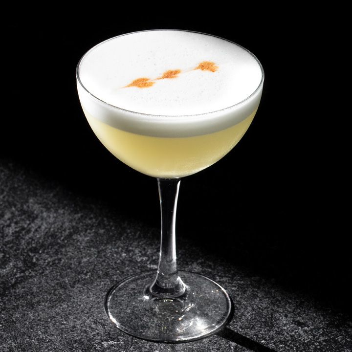

Gin sour

The "Gin Sour" a great drink for any occasion!
The history of the Gin Sour is not know, however, it likely originated in the mid 1800's.
It's a nice balance of smooth and tart with a creamy body after being topped with a classic egg white foam.
Ingredients
2 oz dry gin (your choice)
1 oz lemon juice (fresh squeezed)
1/2 oz simple syrup
1/2 oz egg white
Garnish: lemon twist (optional)
Garnish: 3 drops Angostura bitters (optional)
Steps
- Add the gin, lemon juice, simple syrup and egg white (if using) into a shaker and vigorously dry-shake (without ice)
- Add ice and shake again until well-chilled
- Strain into a coupe glass
- Garnish with a lemon twist. Or if uisng egg white decorate the frothy top with 3 to 5 drops of Angostura bitters.
WARNING: Consuming raw and lighty cooked eggs poses a risk of food-borne illness.
Home
Rum recipe
Whiskey recipe